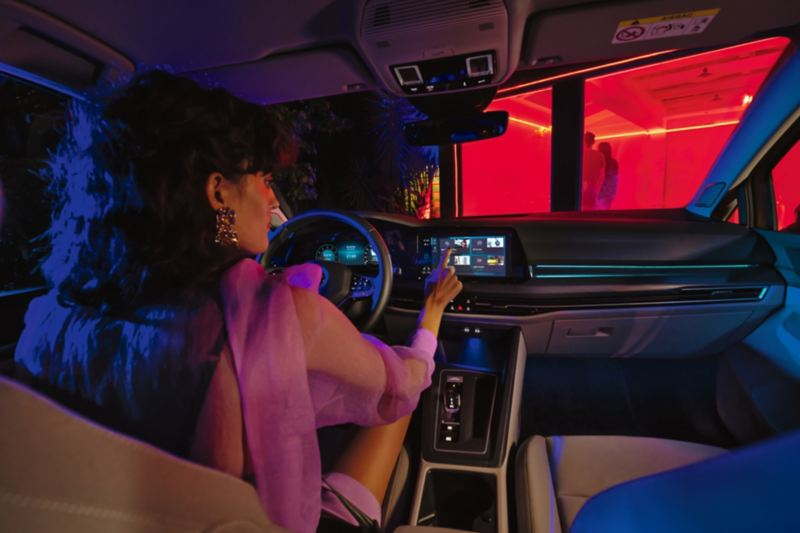
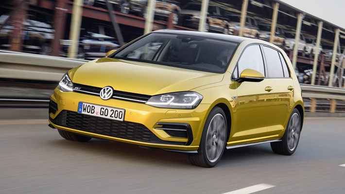

LKSWAGEN
LKSWAGEN
GOLF
Polo.Efsane.Yeniden
Bir otomotiv efsanesi olmak için ne gereklidir? Kendi segmentini yaratmak? Her nesilde standartları yeniden belirlemek? Yarım asır sonra bile özünden vazgeçmeyen tasarım prensiplerine , modern teknolojileri ekleyebilmek? Belki bunların hepsi, ama aslında en önemlisi; 7’den 70’e herkes tarafından çok sevilmek… Çünkü Golf’ü, Golf yapan sizsiniz. Sizin düşünceleriniz, duygularınız, anılarınız… Bu yüzden sizi dinliyor ve onu sürekli olarak geliştiriyoruz. Golf de işte tam bu yüzden hâlâ bildiğiniz gibi ama daha önce hiç olmadığı kadar sportif, dinamik ve dijital. Otomobiller hakkında bildiğiniz her şeyi unutturacak yepyeni bir sürüş ve kontrol deneyimine hazır olun. Dijital Golf ile dilediğinizce yaşayın.
Tasarım

Yapay zeka ile akıllı aydınlatma.
Golf'ün aydınlatma alanında otomotiv endüstrisinin en gelişmiş teknolojik seviyesini ifade eden IQ. LIGHT – LED Matrix farları, her bir farın içinde bulunan 22 adet bağımsız LED modül ile farklı hava ve yol şartlarında en optimum aydınlatmayı garanti altına alır. Zayıf görüş koşulları için özel bir fonksiyonu da bulunan statik viraj farları, “Şehir İçi”, “Standart” ve “Otoban” olmak üzere 3 farklı uzun far modu ve entegre dinamik sinyal lambaları ile IQ. LIGHT – LED Matrix farlar, ayrıca düşük enerji tüketimleri ile yakıt ekonomisine de katkı sağlar. (O) Üstelik Dinamik Uzun Far Asistanı "Dynamic Light Assist" ile birleştiğinde bu farlar, uzun hüzmeli farlar ile ilerlerken merkezi kamera sistemi tarafından tespit edilen trafikteki diğer araçların sürücülerinin gözlerini kamaştırmamak için, LED modüllerini ayrı ayrı kapatıp açabilir.
KONFOR

Geleceğe doğru bakın.
Golf, tamamen dijital iç mekanı ile daha fazla eğlence ve daha hissedilebilir bir konfor sunarken sizi geleceğe de yakınlaştırır. 10” Dijital Gösterge Paneli “Digital Cockpit Pro”, 10” genişliğinde yüksek çözünürlüklü TFT LCD ekranıyla, tüm veri ve bilgileri direkt olarak sürücünün görüş alanına yansıtır. Ayrıca Renkli Ek Bilgilendirme Ekranı “Head-up Display” sayesinde ön cam, bir projeksiyon yüzeyine dönüşür. Böylece hız, sürüş destek sistemlerinden gelen mesajlar veya navigasyon talimatlarını takip ederken gözünüzü yoldan ayırmanıza gerek kalmaz. (I) (L) (ST) (R) Dijital Kokpit’in tam ortasında, sürücüye dönük bir şekilde konumlandırılan merkezi bilgi ve eğlence sistemi ekranı, radyo, bluetooth, telefon ve navigasyonun dışında 3 Bölgeli Tam Otomatik Klima “Climatronic” ve araç ayarları için de bir kontrol paneli görevini üstlenir. Fiziksel tuşlardan tamamen arındırılmış, kullanıcı dostu ve dijital bir kokpit! (L) (ST) (R)
Teknoloji

Güç, yeniden tanımlandı.
Golf, dünyaca ünlü TSI motorların yepyeni bir evrim seviyesini taşır: Yeni 1.0 TSI 110 PS EVO, 1.0 eTSI 110 PS EVO ve 1.5 eTSI 150 PS EVO motorlar, aynı zamanda değişken emme ve egzoz subap zamanlaması ve 350 bar gibi yüksek basınca sahip direkt benzin enjeksiyonu ile donatılmıştır. Bu gelişmiş teknolojiler sayesinde tüm günlük kullanım devir aralıklarında maksimum tork değerlerini kullanıma sunan TSI ve eTSI motorlar, her an hazır bir yüksek çekiş gücünü ve sessiz çalışma karakterini garanti eder. Yeni eTSI, ayrıca Aktif Silindir Yönetimine “ACT” ve eşsiz bir Mild Hybrid teknolojisine sahiptir. 48V’luk bir Lithium-ion batarya’dan güç alan Hybrid sistem, kalkışlarda ve ek güç ihtiyacı olduğunda devreye girerek 0,4 lt/100 km’ye kadar ek yakıt tasarrufu sağlar. Frenleme ve benzinli motorun çalışması sırasında kendi kendine şarj olan bataryalar kullanım kolaylığı sunar. (L) (S) (R)
Güvenlik

Bilimkurgu filmlerinden bir teknoloji. Şimdi.
Yarı Otonom Sürüş Asistanı "Travel Assist", son derece pratik bir sürüş destek sistemidir. Monoton ve yorucu sürüş durumlarında, Golf’ün çok fonksiyonlu direksiyonu üzerinde bulunan dokunmatik bir yüzeye dokunarak sistemi aktive edebilir, konforlu ve güvenli bir yolculuğun keyfini sürebilirsiniz. Sistem, içeriğinde barındırdığı radar, sensör ve kameralar yardımıyla şerit çizgilerini takip eder, direksiyon, gaz ve frenleme kararlarını otonom bir şekilde vererek önde seyreden araç ile takip mesafesini korur ve gerektiğinde kontrollü bir şekilde şerit değiştirebilir.* (O) Yarı Otonom Sürüş Asistanı "Travel Assist", özellikle otoyollarda önünüzdeki araçla mesafeyi hesaba katarak şeridinizi ve hızınızı korumanıza yardımcı olur. Çift Kavramalı Şanzıman "DSG", trafik sıkışıkken ve dur-kalk trafikte sürüş keyfinizin artırır. * Sistemin kabiliyetleri dahilinde. Sürücü her zaman destek sistemlerini kapatma konusunda hazırlıklı olmalı ve aracı dikkatli bir şekilde kullanma sorumluluğunu göz ardı etmemelidir.
Volkswagen Hakkında Modeller Ve Fiyatlar İletişim Sosyal Medya
İkinci El Araçlar Tüm Modeller Yetkili Satıcı Facebook
Ticari Araçlar SUV Modeller Online Servis Instagram
Satış Sonrası Hizmetler Araç Fiyatları İletişim Ve Destek Twitter
Kampanyalar Aksesuarlar Bilgi Formu Youtube
|